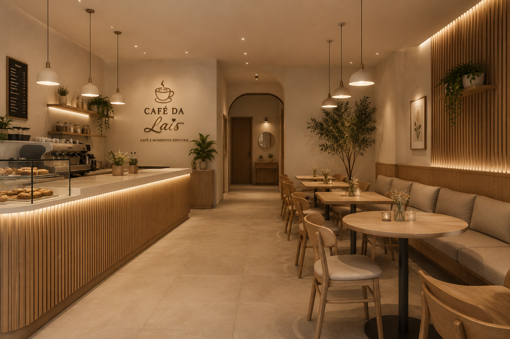
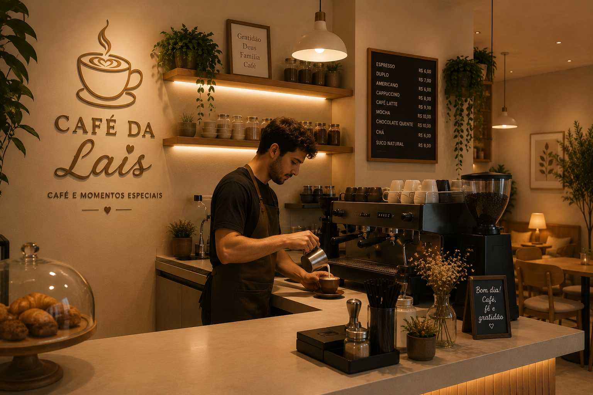

O Café da Lais nasceu com o sonho de transformar uma simples pausa para o café em um momento especial. Desde a nossa inauguração, buscamos oferecer um ambiente acolhedor, onde amigos, famílias e apaixonados por café possam compartilhar bons momentos.
Cada bebida é preparada com ingredientes selecionados e muito carinho, garantindo qualidade, sabor e uma experiência inesquecível para todos os clientes.
Servir cafés especiais e produtos artesanais com excelência, proporcionando conforto, qualidade e um atendimento acolhedor.
Ser reconhecida como uma das cafeterias favoritas da região, destacando-se pela qualidade dos produtos e pelo ambiente agradável.
Respeito, dedicação, qualidade, honestidade, atendimento humanizado e paixão por servir bem.
Xícaras servidas
Produtos no cardápio
Clientes satisfeitos
Café fresco todos os dias
Trabalhamos todos os dias para oferecer um ambiente agradável, produtos preparados na hora e um atendimento que faz cada cliente se sentir em casa. Afinal, acreditamos que um bom café pode tornar qualquer dia muito melhor.
Venha nos conhecer